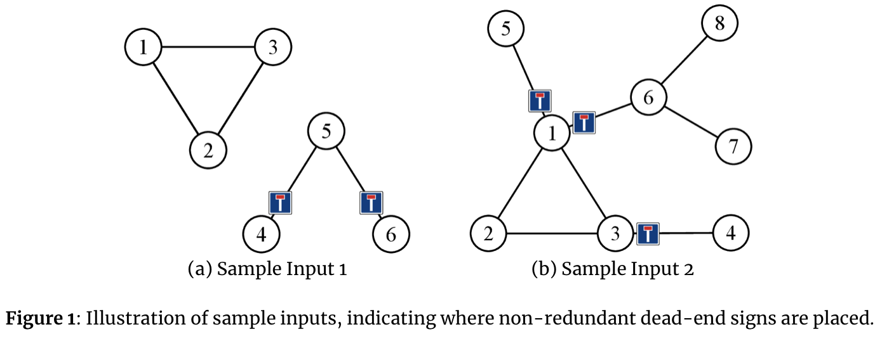

The council of your home town has decided to improve road sign placement, especially for dead ends. They have given you a road map, and you must determine where to put up signs to mark the dead ends. They want you to use as few signs as possible.
The road map is a collection of locations connected by two-way streets. The following rule describes how to obtain a complete placement of dead-end signs. Consider a street $S$ connecting a location $x$ with another location. The $x$-entrance of $S$ gets a dead-end sign if, after entering $S$ from $x$, it is not possible to come back to $x$ without making a U-turn. A U-turn is a 180-degree turn immediately reversing the direction.
To save costs, you have decided not to install redundant dead-end signs, as specified by the following rule. Consider a street $S$ with a dead-end sign at its $x$-entrance and another street $T$ with a dead-end sign at its $y$-entrance. If, after entering $S$ from $x$, it is possible to go to $y$ and enter $T$ without making a U-turn, the dead-end sign at the $y$-entrance of $T$ is redundant. See Figure 1 for examples.

 Comet OJ
Comet OJ